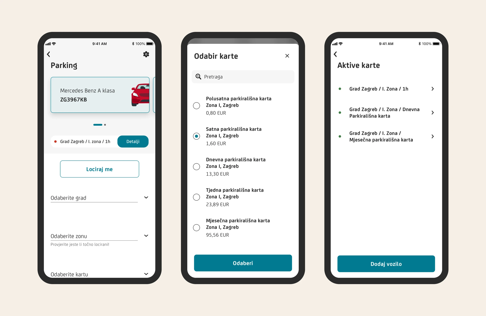

UX/UI dizajn · Mobilno bankarstvo
m-student
m-student donosi svakodnevne studentske usluge u mobilnu aplikaciju Zagrebačke banke. Prikazani ekrani obuhvaćaju Menzu (subvencije za prehranu), IziPay (plaćanja) i m-parking, dizajnirane unutar postojećeg dizajn sustava banke.
Podaci o projektu
Izazov
Svaka usluga ima vlastitu logiku: Menza se temelji na stanju i limitima, IziPay na odabiru računa i primatelja, a m-parking na lokaciji, zoni i vrsti karte. Izazov je bio objediniti tri različite funkcionalnosti u dosljedno iskustvo, uz pregled ključnih informacija i razumljiv slijed koraka.
Moj pristup
Na tim sam tokovima radila koristeći postojeće komponente i obrasce banke, u suradnji s produktnim i razvojnim timom. U Menzi su na vrhu preostala subvencija, današnja potrošnja u odnosu na dnevni limit i razina prava, transakcije su u zasebnoj kartici, a QR kod je udaljen jedan dodir. IziPay plaćanje drži u jednom obrascu, od računa i primatelja do iznosa, nakon čega slijedi ekran potvrde koji ponavlja sve podatke. U m-parkingu vozilo i aktivna karta ostaju vidljivi na vrhu, a vrste karata uspoređuju se na jednom popisu sa zonom i cijenom.
Rad unutar postojećeg dizajn sustava pokazao mi je koliko je dosljednost važna: kad se ponavljaju ista polja, popisi i gumbi, svaka nova funkcionalnost djeluje poznato već pri prvom korištenju.
Finalni dizajn


